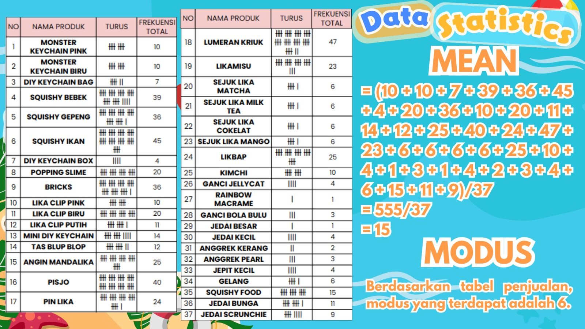
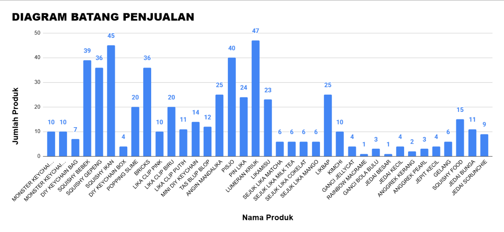
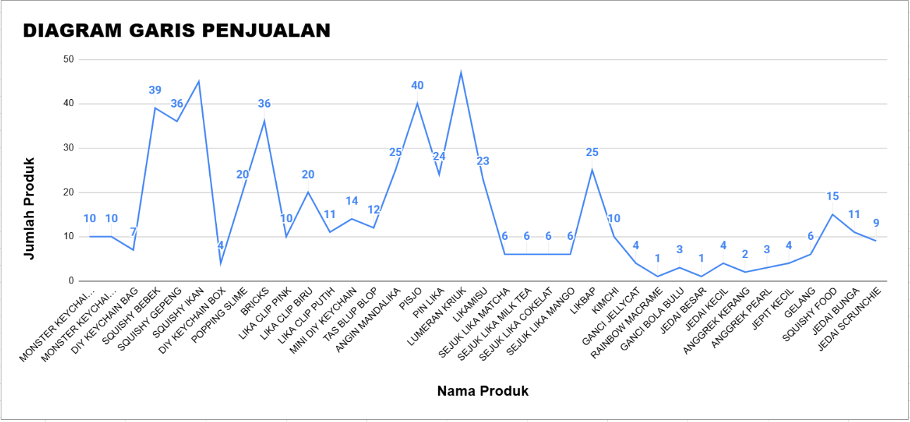
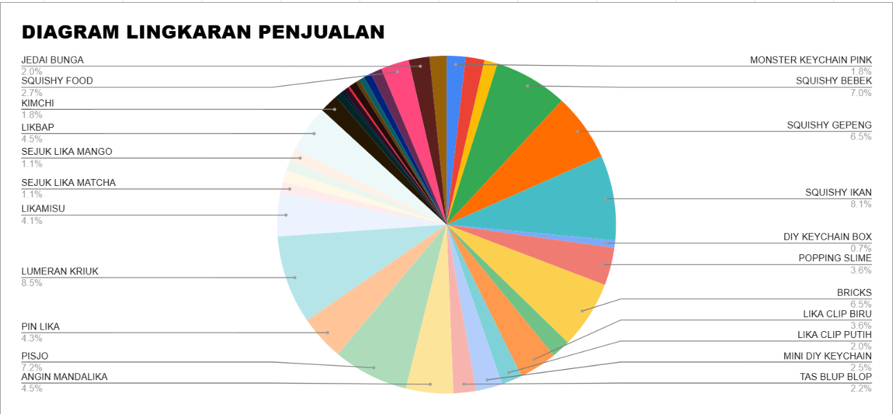

-Photoroom.png)
Analisis penjualan
Total penjualan mencapai Rp. 8.143.000 dari 37 produk, dengan kontribusi penjualan daring sebesar Rp. 4.377.000 (53,75%) dan offline Rp. 3.766.000 (46,25%). Penjualan daring lebih unggul karena waktu promosi lebih panjang dan efektif, dengan penjualan terbanyak pada produk makanan. Sementara itu, penjualan offline didukung oleh variasi produk dan pembelian spontan, yang tetap didominasi oleh beberapa produk utama, terutama produk makanan. Secara keseluruhan, produk makanan dengan harga menengah paling diminati karena sesuai kebutuhan dan terjangkau. Kelebihan usaha terletak pada kekuatan penjualan online dan tingginya minat terhadap makanan, variasi produk, serta promosi menarik seperti bundling
Total penjualan mencapai Rp. 8.143.000 dari 37 produk, dengan kontribusi penjualan daring sebesar Rp. 4.377.000 (53,75%) dan offline Rp. 3.766.000 (46,25%). Penjualan daring lebih unggul karena waktu promosi lebih panjang dan efektif, dengan penjualan terbanyak pada produk makanan. Sementara itu, penjualan offline didukung oleh variasi produk dan pembelian spontan, yang tetap didominasi oleh beberapa produk utama, terutama produk makanan. Secara keseluruhan, produk makanan dengan harga menengah paling diminati karena sesuai kebutuhan dan terjangkau. Kelebihan usaha terletak pada kekuatan penjualan online dan tingginya minat terhadap makanan, variasi produk, serta promosi menarik seperti bundling
Analisis pengeluaran
Total pengeluaran sebesar Rp. 5.935.379, didominasi oleh biaya pembelian bahan baku dan produk (terutama makanan dan aksesoris). Selain itu, biaya dekorasi booth dan biaya lainnya sebesar 18,5% cukup berpengaruh terhadap total biaya. Meskipun pengeluaran cukup besar karena banyaknya variasi produk, usaha ini tetap menguntungkan
Total pengeluaran sebesar Rp. 5.935.379, didominasi oleh biaya pembelian bahan baku dan produk (terutama makanan dan aksesoris). Selain itu, biaya dekorasi booth dan biaya lainnya sebesar 18,5% cukup berpengaruh terhadap total biaya. Meskipun pengeluaran cukup besar karena banyaknya variasi produk, usaha ini tetap menguntungkan
Analisis laba rugi
Total penjualan Rp. 8.143.000 menghasilkan laba kotor Rp. 3.306.473 dan laba bersih Rp. 707.622 setelah dikurangi biaya operasional Rp. 2.598.851. Usaha tetap menguntungkan dengan margin kotor 40,6% dan margin bersih 8,7%, namun laba bersih relatif kecil karena biaya operasional tinggi (terutama gaji dan charity)
Total penjualan Rp. 8.143.000 menghasilkan laba kotor Rp. 3.306.473 dan laba bersih Rp. 707.622 setelah dikurangi biaya operasional Rp. 2.598.851. Usaha tetap menguntungkan dengan margin kotor 40,6% dan margin bersih 8,7%, namun laba bersih relatif kecil karena biaya operasional tinggi (terutama gaji dan charity)
Pembagian keuntungan
Pembagian keuntungan dilakukan berdasarkan dua faktor: kontribusi kerja (untuk gaji melalui survei kinerja) dan modal awal (untuk pembagian laba). Sistem ini dinilai cukup adil dan seimbang karena menghargai usaha dan investasi setiap anggota.
Pembagian keuntungan dilakukan berdasarkan dua faktor: kontribusi kerja (untuk gaji melalui survei kinerja) dan modal awal (untuk pembagian laba). Sistem ini dinilai cukup adil dan seimbang karena menghargai usaha dan investasi setiap anggota.
Analisis gaji
ROI digunakan untuk mengukur efisiensi penggunaan modal, dan hasilnya menunjukkan semua anggota memperoleh keuntungan dengan ROI bervariasi (±18%–50%). Secara keseluruhan, usaha menghasilkan ROI sekitar 11,9% (menguntungkan), namun distribusi ROI belum merata karena perbedaan modal. Perlu peningkatan efisiensi, pricing, dan pemerataan modal.
ROI digunakan untuk mengukur efisiensi penggunaan modal, dan hasilnya menunjukkan semua anggota memperoleh keuntungan dengan ROI bervariasi (±18%–50%). Secara keseluruhan, usaha menghasilkan ROI sekitar 11,9% (menguntungkan), namun distribusi ROI belum merata karena perbedaan modal. Perlu peningkatan efisiensi, pricing, dan pemerataan modal.
Analisis ROI
ROI digunakan untuk mengukur efisiensi penggunaan modal, dan hasilnya menunjukkan semua anggota memperoleh keuntungan dengan ROI bervariasi (±18%–50%). Secara keseluruhan, usaha menghasilkan ROI sekitar 11,9% (menguntungkan), namun distribusi ROI belum merata karena perbedaan modal. Perlu peningkatan efisiensi, pricing, dan pemerataan modal.
ROI digunakan untuk mengukur efisiensi penggunaan modal, dan hasilnya menunjukkan semua anggota memperoleh keuntungan dengan ROI bervariasi (±18%–50%). Secara keseluruhan, usaha menghasilkan ROI sekitar 11,9% (menguntungkan), namun distribusi ROI belum merata karena perbedaan modal. Perlu peningkatan efisiensi, pricing, dan pemerataan modal.
Analisis Visual & Dokumentasi
Statistika adalah cabang ilmu yang mempelajari cara mengumpulkan, mengolah, menganalisis, menafsirkan, dan menyajikan data sehingga menjadi informasi yang berguna untuk pengambilan keputusan. Manfaat Statistika dalam kegiatan bazar ini adalah untuk menghitung rata-rata penjualan, mengetahui tren (naik/turun), mempermudah memahami data, menemukan pola atau tren dan menarik kesimpulan.



